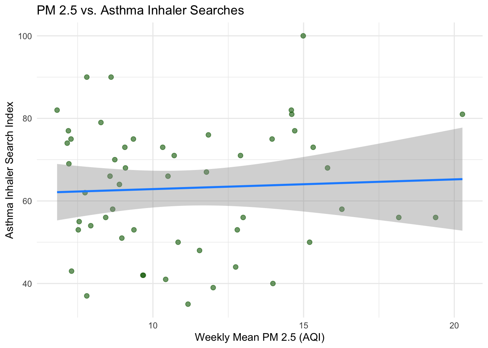

#install.packages("gtrendsR")
#install.packages("ivreg")
#remotes::install_github("ropensci/rnoaa")
library(tidyverse)
library(dplyr)
library(ggplot2)
library(gtrendsR) # For getting google trends data
library(ivreg) # For 2SLS
library(lubridate) # Date handling
library(rnoaa) # NOAA weather data
library(jtools)
set.seed(241244)Instrumental Variables Review
The Endogeneity Problem
In many research settings we want to estimate the causal effect of some treatment \(D\) on an outcome \(Y\). A naive OLS regression of \(Y\) on \(D\) gives us an unbiased estimate only if \(D\) is uncorrelated with the error term \(\varepsilon\). When that assumption fails — i.e., when \(\text{Cov}(D, \varepsilon) \neq 0\) — we say \(D\) is endogenous, and OLS is biased.
Endogeneity can arise from several sources:
- Omitted variable bias: An unobserved variable affects both \(D\) and \(Y\).
- Simultaneity / reverse causality: \(Y\) also influences \(D\).
- Measurement error: \(D\) is measured with noise.
The IV Solution
An instrumental variable \(Z\) allows us to isolate the part of the variation in \(D\) that is exogenous — i.e., uncorrelated with the error term — and use only that part to estimate the effect of \(D\) on \(Y\).
For \(Z\) to be a valid instrument it must satisfy two conditions:
Relevance: \(Z\) must be correlated with the endogenous treatment \(D\). \[\text{Cov}(Z, D) \neq 0\]
Exclusion restriction: \(Z\) must affect \(Y\) only through \(D\) — it cannot have a direct effect on \(Y\) or be correlated with unobserved determinants of \(Y\). \[\text{Cov}(Z, \varepsilon) = 0\]
The relevance condition is testable (we can check whether \(Z\) predicts \(D\) in a regression). The exclusion restriction is not directly testable and must be argued theoretically.
Two-Stage Least Squares (2SLS)
The most common IV estimator is Two-Stage Least Squares (2SLS):
First stage: Regress the endogenous treatment on the instrument(s) and any exogenous controls: \[D_i = \beta_0 + \beta_1 Z_i\] where \(W\) are exogenous control variables. Save the predicted values \(\hat{D}\).
Second stage: Regress the outcome on the predicted values from the first stage and the same controls: \[Y_i = \beta_0 + \beta_1 \hat{D}_i\]
Important
When performing 2SLS manually (running two separate regressions), the standard errors from the second stage are incorrect because they don’t account for the fact that \(\hat{D}\) is itself estimated. In practice we use dedicated functions like ivreg() that compute correct standard errors. We’ll do both in this lab so you can see the mechanics, but always report results from the dedicated IV estimator.
Lab Overview
Research Question
Does air pollution (PM2.5) increase respiratory illness?
- \(Y\) (outcome): Google Trends search interest for “asthma inhaler” — our proxy for respiratory illness
- \(X\) (endogenous regressor): Weekly mean PM2.5 concentration (AQI)
- \(Z\) (instrument): Weekly total precipitation
The Endogeneity Problem in Our Setting
If we simply regress our measure of respiratory illness (\(Y\)) on PM2.5 concentrations (\(X\)), our estimate will likely be biased.
TipComprehension Check
What are the potential sources of endogeneity?
Our Instrument: Precipitation
We propose using weekly precipitation as an instrument (\(Z\)) for PM2.5 (\(D\)). The logic:
- Relevance: Rainfall is a mechanism for removing particulate matter from the atmosphere (“wet deposition”). Weeks with more rain should have lower PM2.5 — we can test this.
- Exclusion restriction: Rainfall affects asthma inhaler searches (\(Y\)) only through its effect on air quality (\(D\)), not directly. This is the assumption we must argue. It is more plausible if we control for seasonal patterns (month fixed effects), since precipitation’s main pathway to respiratory outcomes is through air quality.
Warning
The exclusion restriction is not bulletproof. One could argue that wet weather keeps people indoors (changing exposure patterns) or that humidity itself triggers asthma. We include month fixed effects to absorb seasonal confounders, but you should always think critically about remaining threats.
Data Sources
We combine three datasets for Los Angeles County in 2023:
| Dataset | Source | Frequency | Key Variable |
|---|---|---|---|
| PM2.5 concentrations | EPA Air Quality System (AQS) | Daily | AQI (Air Quality Index) |
| Precipitation | NOAA GHCN-D (station USC00045933, Downtown LA) | Daily | Precipitation (tenths of mm) |
| Respiratory illness proxy | Google Trends (“asthma inhaler”, LA DMA) | Weekly | Search interest index (0–100) |
Since Google Trends data is weekly, we will aggregate all daily data to the weekly level before merging.
TipComprehension Check
- What omitted variables could drive both PM2.5 and asthma searches upward simultaneously?
- Can you think of a scenario in which precipitation might violate the exclusion restriction even after controlling for month fixed effects?
Analysis
Setup
Load Packages
Load in Data
We’ll use LA County 2023 data for PM2.5 and precipitation from EPA’s AQS.
pm25 <- read_csv(here::here("week6", "daily_pm25_LA.csv")) %>%
janitor::clean_names() %>%
mutate(date = mdy(date))We will also be using daily precipitation data from a NOAA API. After following the Pre Lab Prep instructions to request an API Key, paste the key that was sent to your email in the designated area below.
options(noaakey = "YOUR-NOAA-TOKEN-HERE")Now we pull daily precipitation data from a NOAA weather station in Downtown LA for all of 2023.
# Get data for stations
precip_raw <- ghcnd_search(
stationid = "USC00045933", # Downtown LA Station
var = "PRCP",
date_min = "2023-01-01",
date_max = "2023-12-31"
) %>%
pluck("prcp") %>% # Extract the prcp data frame
select(id, date, prcp) %>%
mutate(date = as.Date(date))
# 3. Quick Summary
summary(precip_raw) id date prcp
Length:365 Min. :2023-01-01 Min. : 0.00
Class :character 1st Qu.:2023-04-02 1st Qu.: 0.00
Mode :character Median :2023-07-02 Median : 0.00
Mean :2023-07-02 Mean : 26.04
3rd Qu.:2023-10-01 3rd Qu.: 0.00
Max. :2023-12-31 Max. :513.00 Get Google trends data on respitory illness
Google Trends provides a weekly index (0–100) of relative search interest. We query the term “asthma inhaler” for the Los Angeles Designated Market Area (DMA code US-CA-803) in 2023.
# Query Google Trends for California
trends <- gtrends(
keyword = "asthma inhaler",
geo = "US-CA-803",# LA code
time = "2023-01-01 2023-12-31",
onlyInterest = TRUE
)
trends_df <- trends$interest_over_time %>%
select(date, hits) %>%
mutate(
date = as.Date(date),
asthma_index = as.numeric(hits)
) %>%
filter(!is.na(asthma_index)) %>%
select(date, asthma_index)Data Cleaning
Now we clean the precipitation data (converting units and removing error codes) and merge all three datasets.
precip <- precip_raw %>%
filter(!is.na(prcp)) %>%
mutate(
precip_in = prcp / 254, # Convert to inches
precip_in = ifelse(precip_in < 0, 0, precip_in) # Remove any error codes
) %>%
select(station_id = id, date, precip_in)
# Merge data
data <- pm25 %>%
left_join(
precip %>% select(station_id, date, precip_in),
by = "date"
) %>%
filter(!is.na(precip_in))Since Google Trends data is reported weekly, we need to aggregate our daily PM2.5 and precipitation data to the weekly level before merging.
# Aggregate data to weekly (since google trends is weekly)
# Create week variable (Sunday start)
data <- data %>%
mutate(week_start = floor_date(date, "week", week_start = 7))
# Aggregate to county-week level
data_weekly <- data %>%
group_by(week_start) %>%
summarise(
pm25_mean = mean(daily_mean_pm2_5_concentration, na.rm= TRUE),
precip_total = sum(precip_in),
.groups = "drop"
)
# Merge with Google Trends
data_weekly_joined <- data_weekly %>%
left_join(trends_df, by = c("week_start" = "date")) %>%
filter(!is.na(asthma_index))Let’s inspect our final analysis dataset:
glimpse(data_weekly_joined)Rows: 53
Columns: 4
$ week_start <date> 2023-01-01, 2023-01-08, 2023-01-15, 2023-01-22, 2023-01-…
$ pm25_mean <dbl> 7.300000, 9.088235, 7.211765, 9.664706, 8.576471, 9.35263…
$ precip_total <dbl> 6.6850394, 13.6338583, 4.1574803, 0.0000000, 1.7086614, 5…
$ asthma_index <dbl> 43, 68, 69, 42, 66, 75, 90, 54, 74, 75, 73, 82, 55, 62, 7…summary(data_weekly_joined) week_start pm25_mean precip_total asthma_index
Min. :2023-01-01 Min. : 6.820 Min. : 0.000 Min. : 35.00
1st Qu.:2023-04-02 1st Qu.: 8.433 1st Qu.: 0.000 1st Qu.: 53.00
Median :2023-07-02 Median :10.325 Median : 0.000 Median : 66.00
Mean :2023-07-02 Mean :11.028 Mean : 1.595 Mean : 63.11
3rd Qu.:2023-10-01 3rd Qu.:12.994 3rd Qu.: 1.709 3rd Qu.: 75.00
Max. :2023-12-31 Max. :20.271 Max. :13.634 Max. :100.00 :::{.callout-tip title = “Comprehension Check} How many observations do we have in our final dataset? Is this a lot or a little for regression analysis? What implications does a small sample size have for our estimates? :::
Exploratory Data Analysis
Before diving into models, let’s visualize our three key variables and their relationships.
Relationship Between PM2.5 and Asthma Searches (the relationship we want to estimate)
ggplot(data_weekly_joined, aes(x = pm25_mean, y = asthma_index)) +
geom_point(alpha = 0.6, color = "darkgreen", size = 2) +
geom_smooth(method = "lm", se = TRUE, color = "dodgerblue", linewidth = 1) +
labs(
x = "Weekly Mean PM 2.5 (AQI)",
y = "Asthma Inhaler Search Index",
title = "PM 2.5 vs. Asthma Inhaler Searches"
) +
theme_minimal()
Relationship Between Precipitation and PM2.5 (first-stage relationship)
This is the key relationship for our instrument. Does more rain lead to lower PM2.5?
ggplot(data_weekly_joined, aes(x = precip_total, y = pm25_mean)) +
geom_point(alpha = 0.6, color = "darkgreen", size = 2) +
geom_smooth(method = "lm", se = TRUE, color = "dodgerblue", linewidth = 1) +
labs(
x = "Weekly Total Precipitation (in)",
y = "Weekly Mean PM 2.5 (AQI)",
title = "Precipitation vs. PM2.5"
) +
theme_minimal()
Model
Step 1: OLS
We start with a simple OLS regression — regressing asthma search interest on PM2.5 with no controls. This gives us the unadjusted association, which we expect to be biased.
m1_ols <- lm(asthma_index ~ pm25_mean, data = data_weekly_joined)
summary(m1_ols)
Call:
lm(formula = asthma_index ~ pm25_mean, data = data_weekly_joined)
Residuals:
Min 1Q Median 3Q Max
-28.145 -10.530 3.011 11.797 35.956
Coefficients:
Estimate Std. Error t value Pr(>|t|)
(Intercept) 60.5204 7.2912 8.300 4.94e-11 ***
pm25_mean 0.2351 0.6324 0.372 0.712
---
Signif. codes: 0 '***' 0.001 '**' 0.01 '*' 0.05 '.' 0.1 ' ' 1
Residual standard error: 15.48 on 51 degrees of freedom
Multiple R-squared: 0.002703, Adjusted R-squared: -0.01685
F-statistic: 0.1382 on 1 and 51 DF, p-value: 0.7116Interpretation: The coefficient on pm25_mean tells us the estimated change in the asthma inhaler search index associated with a one-unit increase in weekly mean AQI. But remember — this estimate is likely biased due to omitted variables.
Step 2: OLS with Month Fixed Effects
We add month fixed effects to control for seasonal confounders (e.g., flu season, wildfire season, holiday patterns).
m2_ols_fe <-lm(asthma_index ~ pm25_mean + factor(month(week_start)) ,
data = data_weekly_joined)
summary(m2_ols_fe)
Call:
lm(formula = asthma_index ~ pm25_mean + factor(month(week_start)),
data = data_weekly_joined)
Residuals:
Min 1Q Median 3Q Max
-32.327 -10.493 1.336 10.810 30.200
Coefficients:
Estimate Std. Error t value Pr(>|t|)
(Intercept) 52.1878 10.4359 5.001 1.18e-05 ***
pm25_mean 0.6468 0.9084 0.712 0.481
factor(month(week_start))2 15.8474 10.7288 1.477 0.147
factor(month(week_start))3 14.0945 10.7434 1.312 0.197
factor(month(week_start))4 2.5608 10.7699 0.238 0.813
factor(month(week_start))5 -3.8914 10.9415 -0.356 0.724
factor(month(week_start))6 7.4701 10.8045 0.691 0.493
factor(month(week_start))7 -0.7651 11.9733 -0.064 0.949
factor(month(week_start))8 -3.4961 11.0509 -0.316 0.753
factor(month(week_start))9 8.5553 11.5725 0.739 0.464
factor(month(week_start))10 7.9187 10.6074 0.747 0.460
factor(month(week_start))11 -3.6829 10.7354 -0.343 0.733
factor(month(week_start))12 2.5709 10.9704 0.234 0.816
---
Signif. codes: 0 '***' 0.001 '**' 0.01 '*' 0.05 '.' 0.1 ' ' 1
Residual standard error: 15.99 on 40 degrees of freedom
Multiple R-squared: 0.1657, Adjusted R-squared: -0.08463
F-statistic: 0.6619 on 12 and 40 DF, p-value: 0.7762
TipComprehension Check
- How did the coefficient on
pm25_meanchange when we added month fixed effects? What does this tell you about the role of seasonal confounders? - Even with month fixed effects, why might the OLS estimate still be biased? What sources of endogeneity remain?
Step 3: First Stage — Does Precipitation Predict PM2.5?
Now we move to the IV approach. The first step in 2SLS is to verify that our instrument (\(Z\) = precipitation) is a strong predictor of the endogenous variable (\(X\) = PM2.5).
first_stage <- lm(pm25_mean ~ precip_total + factor(month(week_start)),
data = data_weekly_joined)
export_summs(first_stage, digits = 3,
model.names = c("First stage: Average PM 2.5"),
coefs = c("(Intercept)", "precip_total")) | First stage: Average PM 2.5 | |
|---|---|
| (Intercept) | 8.893 *** |
| (1.559) | |
| precip_total | -0.100 |
| (0.181) | |
| N | 53 |
| R2 | 0.487 |
| *** p < 0.001; ** p < 0.01; * p < 0.05. | |
Assessing instrument strength: A common rule of thumb is that the F-statistic on the excluded instrument(s) in the first stage should be greater than 10. An F-stat below 10 suggests a weak instrument, which can lead to biased IV estimates and unreliable inference.
# Extract the F-statistic for instrument strength
first_stage_summary <- summary(first_stage)
first_stage_summary$fstatistic[1] value
3.164229
TipComprehension Check
- What is the sign of the coefficient on
precip_totalin the first stage? Is this consistent with your expectations about how precipitation affects PM2.5? - Based on the first-stage results, would you consider precipitation a strong or weak instrument?
Step 4: Second Stage (Manual 2SLS)
Using the predicted values (\(\hat{X}\)) from the first stage, we now estimate the second stage. This isolates the variation in PM 2.5 that is driven only by precipitation (\(Z\)).
data_weekly_joined$pm25_hat <- predict(first_stage)
second_stage <- lm(asthma_index ~ pm25_hat + factor(month(week_start)),
data = data_weekly_joined)
export_summs(second_stage, digits = 3,
model.names = c("Second stage: Asthma Index"),
coefs = c("(Intercept)", "pm25_hat"))| Second stage: Asthma Index | |
|---|---|
| (Intercept) | 114.038 |
| (87.383) | |
| pm25_hat | -6.744 |
| (10.407) | |
| N | 53 |
| R2 | 0.164 |
| *** p < 0.001; ** p < 0.01; * p < 0.05. | |
Warning
Remember: the standard errors from this manual second stage are not correct for inference. They don’t account for the estimation uncertainty in \(\hat{X}\) from the first stage. Use ivreg() for your actual results.
Step 5: IV Estimation with ivreg()
The ivreg() function performs 2SLS in one step with correct standard errors. The syntax uses | to separate the structural equation (left) from the instruments (right).
The formula syntax is: Y ~ D + controls | Z + controls
- Everything to the left of
|is in the second-stage equation (outcome \(Y\) regressed on endogenous variable \(X\) and controls). - Everything to the right of
|lists the instruments (\(Z\)) and exogenous controls used in the first stage.
m3_ivreg <- ivreg(asthma_index ~ pm25_mean + factor(month(week_start)) |
precip_total + factor(month(week_start)),
data = data_weekly_joined)
export_summs(m3_ivreg, digits = 3,
model.names = c("IV Regression (ivreg)"),
coefs = c("pm25_mean"))| IV Regression (ivreg) | |
|---|---|
| pm25_mean | -6.744 |
| (16.940) | |
| nobs | 53 |
| r.squared | -1.215 |
| adj.r.squared | -1.880 |
| sigma | 26.052 |
| statistic | 0.247 |
| p.value | 0.994 |
| df | 13.000 |
| df.residual | 40.000 |
| nobs.1 | 53.000 |
| *** p < 0.001; ** p < 0.01; * p < 0.05. | |
Step 6: Comparing All Models
Let’s compare the OLS, OLS + FE, and IV estimates side by side.
export_summs(m1_ols, m2_ols_fe, m3_ivreg,
digits = 3,
model.names = c("OLS (Naive)", "OLS + Month FE", "IV (2SLS)"),
coefs = c("pm25_mean"))| OLS (Naive) | OLS + Month FE | IV (2SLS) | |
|---|---|---|---|
| pm25_mean | 0.235 | 0.647 | -6.744 |
| (0.632) | (0.908) | (16.940) | |
| N | 53 | 53 | 53 |
| R2 | 0.003 | 0.166 | -1.215 |
| *** p < 0.001; ** p < 0.01; * p < 0.05. | |||
Discussion & Reflection
TipComprehension Check
Validity of the instrument: We argued that precipitation satisfies the exclusion restriction because it affects asthma searches only through PM2.5. Can you think of a mechanism by which precipitation could directly affect asthma searches, bypassing PM2.5? If such a relationship exists, how would it bias our IV estimate?
LATE interpretation: IV estimates capture the Local Average Treatment Effect (LATE) — the effect for “compliers,” i.e., observations whose PM2.5 levels are actually moved by changes in precipitation. Who are the “compliers” in this setting, and how might this affect the generalizability of our estimate?
Alternative instruments: Can you propose another variable that might serve as an instrument for PM2.5? Explain why it would satisfy relevance and the exclusion restriction.
Four key assumptions: List the four key assumptions required for the IV strategy (2SLS) to identify a causal effect, and briefly explain what each one means in the context of this study.